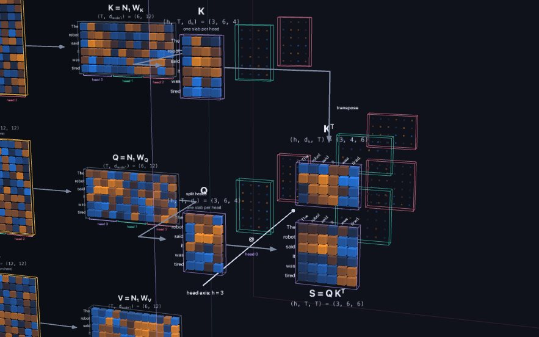
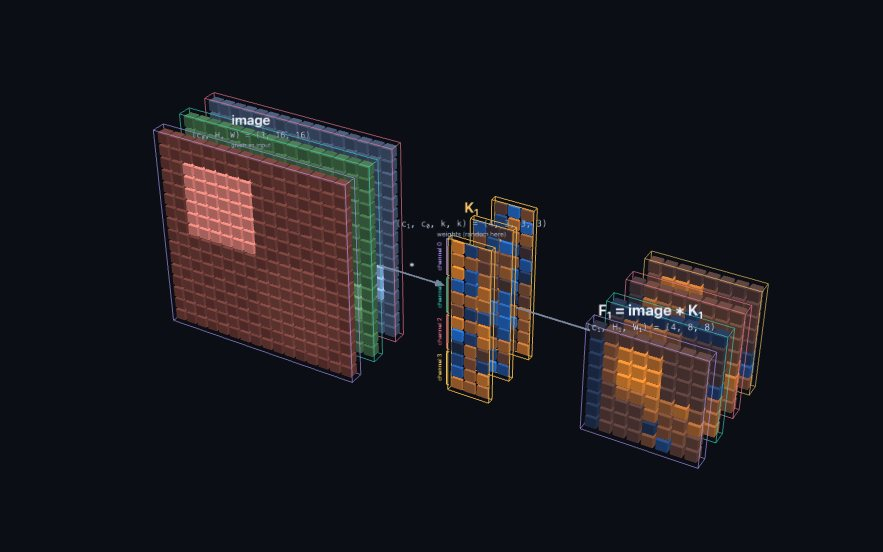
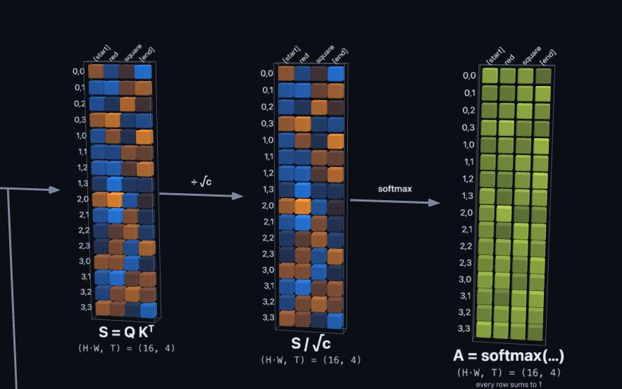
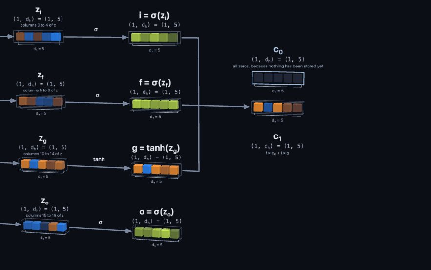
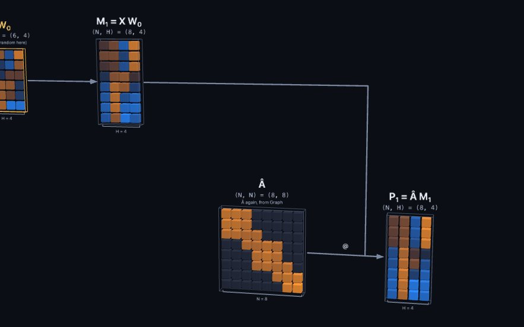
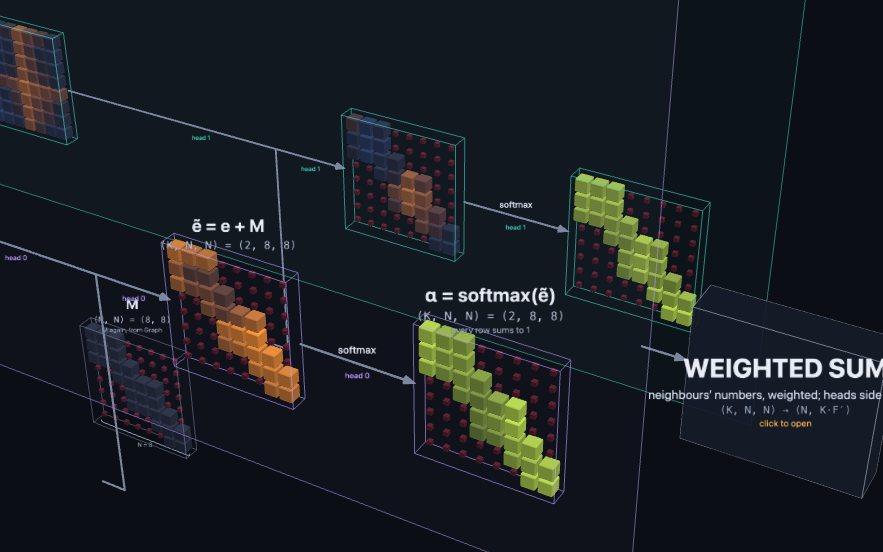

Transformer
A GPT-style language model with two blocks: attention, then a feed-forward layer, twice.
8,784 cubes · 25 stepsSix machine-learning models, each as an interactive 3D page. Every number is one cube, every table of numbers carries its shape, and pointing at a cube lights up the numbers it was computed from.
No page is drawn by hand. Each one is compiled in your browser from a short program in a small tensor language. The project is model-arithmetic-3d on GitHub.

A GPT-style language model with two blocks: attention, then a feed-forward layer, twice.
8,784 cubes · 25 steps
A YOLOv3-style object detector at one scale: convolutions down to a grid of box predictions.
1,694 cubes · 13 steps
A Stable Diffusion v1-style text-to-image model: text encoder, denoising U-Net and image decoder.
24,350 cubes · 59 steps
An LSTM language model over four time steps, with its gates and its cell state.
1,617 cubes · 16 steps
Two layers that classify the nodes of a small graph from their features and their links.
604 cubes · 15 steps
One layer in which every node weighs its neighbours by attention before taking them in.
1,024 cubes · 15 steps